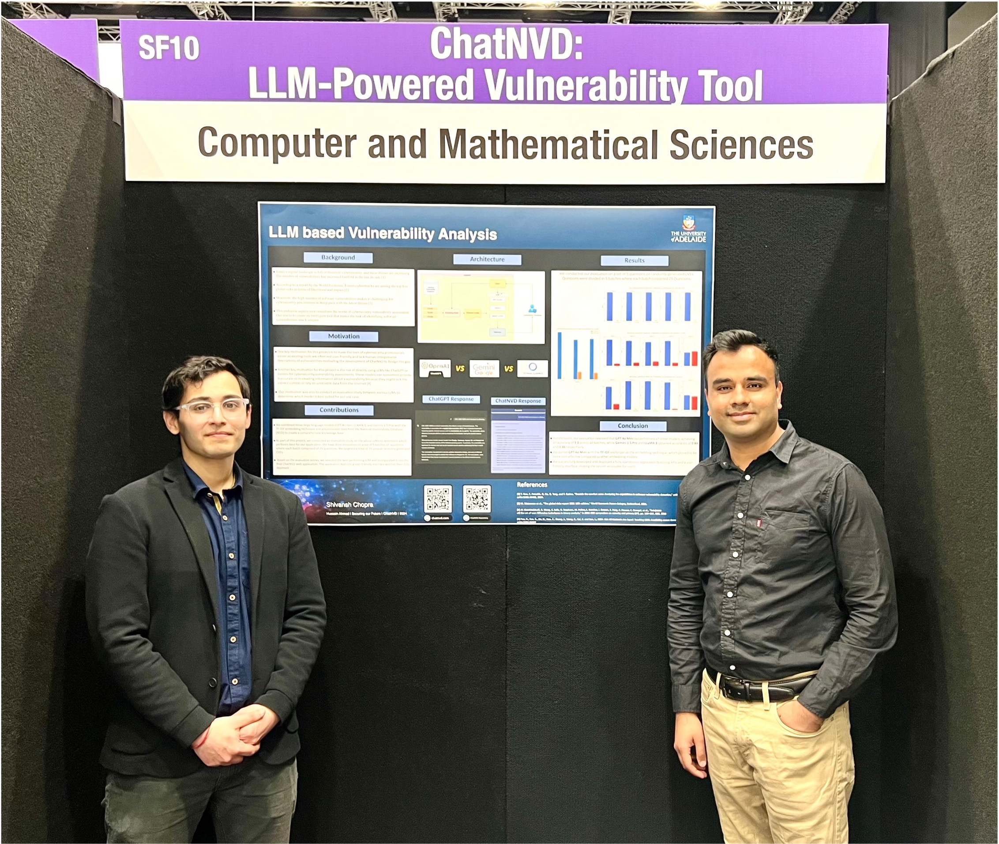
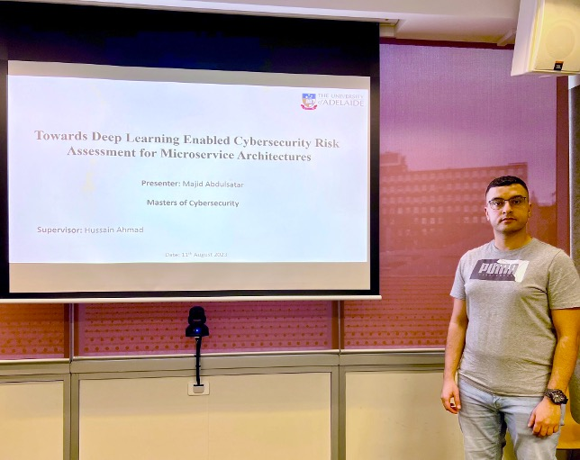
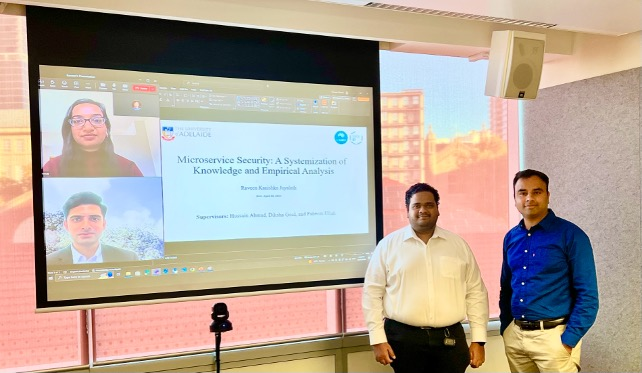
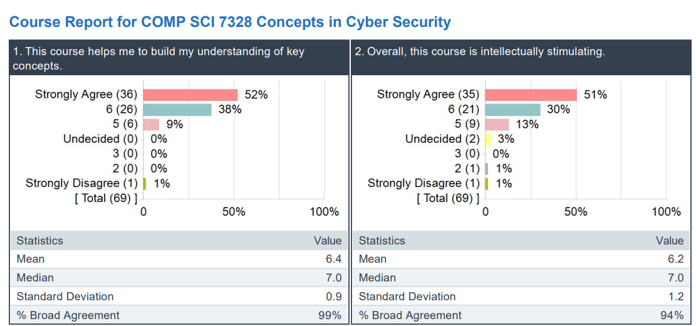
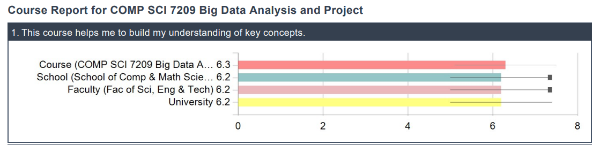

Teaching Portfolio
Teaching portfolio, pedagogical philosophy, courses taught and coordinated across on-campus, hybrid, and online delivery modes, curriculum innovations, postgraduate mentorship, and student evaluations (SELT).
Teaching Philosophy
My teaching philosophy is grounded in clarity, inclusivity, and real-world relevance. I aim to create structured, student-centric, and engaging learning environments that help students understand complex concepts deeply while building confidence and industry-ready professional skills.
1. Structured Learning
Develop a modular pedagogical approach that supports progressive concept development, clear organisation across lectures, assessments, and evaluation rubrics.
2. Simplicity with Rigour
Make complex computer science and cybersecurity ideas accessible while maintaining technical depth, precision, and research-backed rigor.
3. Real-World Relevance
Integrate industry-aligned, hands-on learning to connect academic theory directly with modern industry requirements and cloud-native practices.
4. Constructive Feedback
Provide continuous, targeted, and actionable feedback to support student growth, build self-efficacy, and encourage independent problem-solving.
5. Inclusivity & Engagement
Foster inclusive, student-centered learning through interactive workshops, active polling, flexible delivery modes, and dedicated mentoring for diverse cohorts.
Courses Taught (Lecturer / Unit Coordinator)
Lecturer and unit coordinator delivering undergraduate and postgraduate courses across on-campus, hybrid, and online delivery modes, as well as supervising research capstone projects.
Coordinated & Lectured Courses
| Course Code | Course Title | Delivery Mode | Role |
|---|---|---|---|
| INFO 6004 | Cloud Security | On-Campus / Hybrid | Lecturer & Coordinator |
| COMP SCI 7328 | Concepts in Cyber Security | On-Campus / Hybrid | Lecturer & Coordinator |
| COMP SCI 7209 | Big Data Analysis and Project | On-Campus | Lecturer & Coordinator |
| COMP SCI 3021 | Industry Project in Information Technology | On-Campus (Adelaide) | Lecturer & Coordinator |
| COMP SCI 3021MELB | Industry Project in IT (Melbourne Campus) | Melbourne Campus | Course Coordinator |
| COMP 5059 | Introduction to System Security | On-Campus / Hybrid | Lecturer |
| COMP 5063 | Research Methods for Cyber Security | Postgraduate | Lecturer |
| INFO 6017 | Working with Big Data | Postgraduate | Lecturer |
| COMP 5058 | Foundations of Computer Science - Python B | Coursework | Lecturer |
| COMP 5062 | OL Research Methods | Online Delivery | Online Lecturer |
| COMP 6029 | OL Human & Ethical Factors in Computer Science | Online Delivery | Online Lecturer |
| COMP 5032 | Innovative and Emerging Technologies | Postgraduate | Lecturer |
| INFO 6008 | Enterprise Resource Management | Postgraduate | Lecturer |
| INFO 2032 | Professional Communication and Teamwork | Undergraduate | Lecturer |
Postgraduate & Research Supervision
Supervised 80+ undergraduate and postgraduate students across doctoral research, masters by research, and industry capstone programs in cybersecurity, AI, data science, and software engineering.
PhD Supervision (Co-Supervisor)
Supervising doctoral candidates in Cyber Security, Software Engineering, Generative AI, and self-adaptive systems, with focus on top-tier conference and journal publication.
Masters by Research
Supervising Masters researchers on industry-focused R&D projects, bridging academic rigor with practical deployment.
Coursework & Capstone Research Supervised
- Cyber Security Industry Projects (COMP SCI 7102A/B)
- AI & Machine Learning Research Projects (COMP SCI 7205A/B)
- Research Project – Master Computer Science (COMP SCI 7100A/B)
- Data Science Research Projects (MATHS 7097A/B)
- Industry Project in Information Technology (COMP SCI 3021 / 3021MELB)
- Master of Computing & Innovation Project (COMP SCI 7098)
Supervision Philosophy
My supervision approach emphasizes mentorship, regular weekly feedback, critical thinking, industry engagement, and research excellence, guiding students to produce impactful, peer-reviewed, and publishable research outcomes.



Curriculum Design & Development
I actively lead curriculum development for major computing courses including Cloud Security (INFO6004), Concepts in Cyber Security (COMP SCI 7328), Big Data Analysis and Project (COMP SCI 7209), and Industry Project in Information Technology (COMP SCI 3021 & 3021MELB). Assessments and learning modules are designed with industry partners to integrate Generative AI, cloud-native deployments, and secure engineering practices.
Curriculum Planning & AI Integration
Modernized course modules with emerging Generative AI tools, prompt engineering techniques, and real-time project-based assessments.
Cloud-Native Architecture
Hands-on lab modules built around distributed computing, container security, cloud services, and Kubernetes deployments.
Secure Software Engineering
Interactive project rubrics ensuring practical defensive coding, DevSecOps pipelines, and automated vulnerability scanning.
Industry Alignment & Capstone
Structured project evaluations mapped to real-world corporate client requirements, industry deliverables, and professional teamwork.
Teaching & Pedagogical Skills
Pedagogical Skills
EdTech & Platforms
Teaching Excellence & Student Reviews (SELT)
Achieved an overall score of 99% in the Student Experience of Learning and Teaching (SELT) for coordinating and teaching courses at the University of Adelaide.
Student Feedback Analytics & Performance

Overall Course Satisfaction
Teaching Performance Metrics